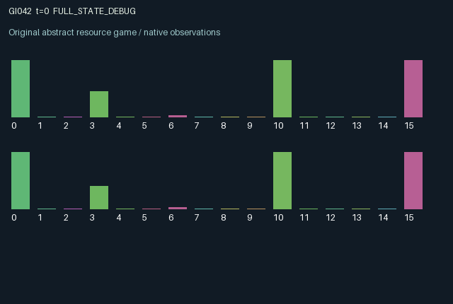

GI042 / LEGACY_ARRAY
astra-d2-00042: Versioned data exchange with short leases
2 agents5 actions16 observation columns32 original horizonRuntime: PASS
Release verification episode
Untrained uniform legal actions. Actual JAX state sampled along the full original episode; full-state debug camera. No human performance or learning claim.

Run this game
crucibles play --game 42
Start Python locally, then open the address printed by the terminal. Installation, multiplayer, takeover and keyboard controls →
Objective, rewards & ending
Exact task contract
{
"objective": "Accumulate original per-agent rewards under the interaction rules in mechanism.md.",
"natural_termination": "No early terminal; original t >= 32 horizon.",
"exact_transition_and_reward_source": "def raw_step(self, key, state, actions):\n channel_free = state[\"pipe_delay\"] == 0\n ordinary = (actions == 1) & channel_free & (state[\"battery\"] >= 0.1)\n reading = (actions == 2) & state[\"cache_available\"] & (state[\"battery\"] >= 0.08)\n writing = (actions == 3) & (state[\"lock\"] == 0) & (state[\"battery\"] >= 0.15)\n fencing = (actions == 4) & channel_free & (state[\"battery\"] >= 0.3)\n sending = ordinary | fencing\n content = jnp.where(writing, 1 - state[\"content\"], state[\"content\"]).astype(jnp.int32)\n version = state[\"version\"] + writing.astype(jnp.int32)\n success = (\n reading\n & (state[\"cache_version\"] >= 0)\n & (state[\"cache_version\"] == jnp.roll(version, 1))\n & (state[\"cache_content\"] == state[\"demand\"])\n )\n failure = reading & (~success)\n delivered = jnp.roll(state[\"pipe_delay\"] == 1, 1)\n new_demands = jax.random.randint(key, (2,), 0, 2, dtype=jnp.int32)\n demand = jnp.where(success, new_demands, state[\"demand\"]).astype(jnp.int32)\n peer_use = jnp.roll(success, 1).astype(jnp.float32)\n rewards = jnp.clip(\n 0.55 * success.astype(jnp.float32)\n - 0.25 * failure.astype(jnp.float32)\n + 0.2 * peer_use\n - 0.02 * ordinary.astype(jnp.float32)\n - 0.03 * writing.astype(jnp.float32)\n - 0.06 * fencing.astype(jnp.float32),\n -1.0,\n 1.0,\n ).astype(jnp.float32)\n next_state = {\n \"t\": state[\"t\"] + jnp.array(1, dtype=jnp.int32),\n \"content\": content,\n \"version\": version.astype(jnp.int32),\n \"demand\": demand,\n \"battery\": jnp.clip(\n state[\"battery\"]\n + 0.28 * (actions == 0).astype(jnp.float32)\n - 0.1 * ordinary.astype(jnp.float32)\n - 0.08 * reading.astype(jnp.float32)\n - 0.15 * writing.astype(jnp.float32)\n - 0.3 * fencing.astype(jnp.float32),\n 0.0,\n 2.0,\n ).astype(jnp.float32),\n \"lock\": jnp.where(fencing, 3, jnp.maximum(state[\"lock\"] - 1, 0)).astype(jnp.int32),\n \"cache_content\": jnp.where(delivered, jnp.roll(state[\"pipe_content\"], 1), state[\"cache_content\"]).astype(jnp.int32),\n \"cache_version\": jnp.where(delivered, jnp.roll(state[\"pipe_version\"], 1), state[\"cache_version\"]).astype(jnp.int32),\n \"cache_demand\": jnp.where(delivered, jnp.roll(state[\"pipe_demand\"], 1), state[\"cache_demand\"]).astype(jnp.int32),\n \"cache_available\": jnp.where(delivered, True, state[\"cache_available\"] & (~reading)),\n \"cache_lease\": jnp.where(\n delivered, jnp.roll(state[\"pipe_lease\"], 1), jnp.maximum(state[\"cache_lease\"] - 1, 0)\n ).astype(jnp.int32),\n \"cache_age\": jnp.where(delivered, 0, jnp.minimum(state[\"cache_age\"] + 1, 32)).astype(jnp.int32),\n \"pipe_content\": jnp.where(sending, state[\"content\"], state[\"pipe_content\"]).astype(jnp.int32),\n \"pipe_version\": jnp.where(sending, state[\"version\"], state[\"pipe_version\"]).astype(jnp.int32),\n \"pipe_demand\": jnp.where(sending, state[\"demand\"], state[\"pipe_demand\"]).astype(jnp.int32),\n \"pipe_delay\": jnp.where(\n sending, jnp.where(fencing, 1, 2), jnp.maximum(state[\"pipe_delay\"] - 1, 0)\n ).astype(jnp.int32),\n \"pipe_lease\": jnp.where(sending, jnp.where(fencing, 2, 0), state[\"pipe_lease\"]).astype(jnp.int32),\n \"last_read\": (success.astype(jnp.float32) - failure.astype(jnp.float32)),\n \"last_peer_use\": peer_use,\n }\n done_all = next_state[\"t\"] >= 32\n dones = jnp.full((2,), done_all, dtype=jnp.bool_)\n info = {\"done_all\": done_all, \"legal_mask\": self.legal_actions(next_state)}\n return self.observe(next_state), next_state, rewards, dones, info"
}Declared per-step reward bounds: -1.0 to 1.0. Observability: source_defined.
Rules
Original mechanism document (historical status wording retained)
# astra-d2-00042: Versioned data exchange with short leases Each agent privately owns a mutable binary record, its version number and a binary demand for the other agent's record. It also holds a one-use cached snapshot of the other record and the request bundled with that snapshot. Action 0 recharges; 1 broadcasts an ordinary snapshot; 2 consumes the local cache; 3 toggles the owned record and increments its version; 4 sends a faster snapshot while locking owned writes for three transitions. Sending and writing require energy; recharging is always legal. An ordinary message starts a countdown of 2 and arrives after two subsequent transitions. A fenced message starts at 1 and arrives after one subsequent transition. The fenced writer cannot modify its record during the following lock period, and the delivered snapshot carries a two-decision lease countdown. A cache consumption succeeds only if its version still equals the producer's version after simultaneous writes, and its content matches the consumer's private demand. An attempted read consumes the cache token even if it fails. A newly delivered message replenishes the token at the end of that transition, so it cannot retroactively rescue the action already chosen. Successful use earns the consumer utility and the producer a usage royalty, then samples the consumer's next private demand from the explicit key. Mutable records allow producers to meet new demands, but unannounced writes invalidate other agents' caches. Ordinary broadcasting costs less and allows continued writing. Fencing costs more, arrives sooner and trades temporary flexibility for a consistency guarantee. Success can be affected by the other agent's simultaneous write, earlier transmitted content, and record-matching decisions based on delayed requests. Each observation contains the owned content/version/demand/energy/lock, the cached remote content/version/request, cache availability/lease/age, outgoing countdown, last read result, last producer royalty event, clock and role label. Current remote content, version and demand are not revealed directly. Initial requests and content are sampled from the supplied reset key. There is no external source of privileged correctness labels. Reward is the clipped sum of successful-use utility, failed-use penalty, producer royalty and send/write/fence costs, bounded in [-1,1]. Persistent state and cross-role outcomes are mediated by delayed packets, mutable versions, one-use consumption and write locks. This is related to cache coherence, distributed read consistency and temporary write leases. It is a synthetic coordination game, not an implementation of a production network protocol. Its causal proposal is the combination of privately changing demand, action-mediated invalidation, usage royalties and an optional credible short-term lock. No source distinctness theorem, pool qualification, compiler result or learning result is claimed. The source uses the A2/O16/U5 interface, increments the scalar clock once per step and retains the terminal state at 32 steps. This initial parentless attempt was authored from the supplied train-context contract and whitelist only; execution and isolated validation were not performed.
Commands
0Recharge
1Send ordinary version
2Read cached version
3Write content
4Send fencing lease
Roles & abilities
agent_0 Original legacy agent; see mechanism and source
agent_1 Original legacy agent; see mechanism and source
Observation permissions
Training receives only the original observation rows. Role cameras use declared visibility; debug cameras are explicitly marked. Local benchmark records log debug exposure and role takeover history.
Exact observation layout
[
{
"slice": [
0,
16
],
"visibility": "exact original observe() below",
"source_code": "def observe(self, state):\n obs = jnp.zeros((2, 16), dtype=jnp.float32)\n obs = obs.at[:, 0].set(state[\"content\"])\n obs = obs.at[:, 1].set(state[\"version\"] / 32.0)\n obs = obs.at[:, 2].set(state[\"demand\"])\n obs = obs.at[:, 3].set(state[\"battery\"] / 2.0)\n obs = obs.at[:, 4].set(state[\"lock\"] / 3.0)\n obs = obs.at[:, 5].set(state[\"cache_content\"])\n obs = obs.at[:, 6].set(state[\"cache_version\"] / 32.0)\n obs = obs.at[:, 7].set(state[\"cache_demand\"])\n obs = obs.at[:, 8].set(state[\"cache_available\"].astype(jnp.float32))\n obs = obs.at[:, 9].set(state[\"cache_lease\"] / 2.0)\n obs = obs.at[:, 10].set(state[\"cache_age\"] / 32.0)\n obs = obs.at[:, 11].set(state[\"pipe_delay\"] / 2.0)\n obs = obs.at[:, 12].set(state[\"last_read\"])\n obs = obs.at[:, 13].set(state[\"last_peer_use\"])\n obs = obs.at[:, 14].set(state[\"t\"] / 32.0)\n obs = obs.at[:, 15].set(jnp.array([-1.0, 1.0], dtype=jnp.float32))\n return obs"
}
]Entity visibility & attributes
[]
Actual verification & provenance
Per-game execution receipt
{
"game": "gi042",
"status": "PASS",
"verification_revision": 2,
"source_sha256": "3e0d6b4c4e535c45016d8cff0ebe7d8caf744fd989efc78f60a38c251439568a",
"seed": 20261101,
"runtime": {
"jax": "0.4.38",
"numpy": "1.26.4",
"devices": [
"TFRT_CPU_0"
]
},
"dimensions": {
"num_agents": 2,
"observation_size": 16,
"num_actions": 5,
"max_steps": 32
},
"checks": {
"eager_reset": {
"status": "PASS",
"seconds": 0.7210526466369629
},
"observation_spaces_legal_masks": {
"status": "PASS",
"seconds": 0.18340039253234863
},
"eager_step": {
"status": "PASS",
"seconds": 0.5007007122039795
},
"jit_reset": {
"status": "PASS",
"seconds": 0.3197622299194336
},
"jit_step": {
"status": "PASS",
"seconds": 0.3194117546081543
},
"eager_jit_integer_parity_float_measurement": {
"status": "PASS",
"seconds": 0.0009999275207519531
},
"jit_vmap_reset": {
"status": "PASS",
"seconds": 0.46567273139953613
},
"jit_vmap_step": {
"status": "PASS",
"seconds": 0.5132243633270264
},
"outer_autoreset_api": {
"status": "PASS",
"seconds": 0.8475315570831299
},
"full_original_horizon_episode_and_render": {
"status": "PASS",
"seconds": 1.6122896671295166
}
},
"human_scores": null,
"browser_controls": "PENDING",
"failures": [],
"elapsed_seconds": 5.924567461013794,
"float_parity_max_abs": 0.0,
"numerical_parity": "EXACT",
"raw_terminal_absorbing": "NOT_PART_OF_ORIGINAL_LEGACY_CONTRACT",
"terminal_outer_reset": "PASS",
"episode_steps": 32,
"scripted_random_returns": [
-0.9199999645352364,
-1.9099999852478504
],
"terminal": true,
"demo_information": "FULL_STATE_DEBUG",
"demo_frames": 33,
"render_roles_checked": 2
}Chromium control verification
{
"game": "gi042",
"status": "PASS",
"human_scores": null,
"engineering": true,
"checks": [
"catalog_selected_and_real_native_reset",
"dom_queue_and_native_step",
"second_participant_ownership_and_native_joint_step",
"all_roles_individually_controllable_no_role_cap",
"explicit_debug_camera",
"release_to_pure_ai_without_reset"
],
"ui_sha256": "15b5861d23b3c42811865c954d5a988280bbfd21cf8e93754be2437a027158c5",
"seconds": 4.033607482910156
}Original identity and file hashes
{
"id": 42,
"key": "gi042",
"title": "astra-d2-00042: Versioned data exchange with short leases",
"summary": "",
"tags": [],
"family": "legacy_array",
"dimensions": {
"num_agents": 2,
"observation_size": 16,
"num_actions": 5,
"max_steps": 32
},
"source_sha256": "3e0d6b4c4e535c45016d8cff0ebe7d8caf744fd989efc78f60a38c251439568a",
"manifest_sha256": "da615e47c89a360c6e3a9cf8454318c46e8d5397dc385857553d544ec8045d06",
"files": [
{
"file": "candidate.py",
"sha256": "3e0d6b4c4e535c45016d8cff0ebe7d8caf744fd989efc78f60a38c251439568a",
"bytes": 7040,
"origin": "work/exp_2/astra_generation/discovery_v2/initial/candidate_00042/attempt_00/candidate.py"
},
{
"file": "mechanism.md",
"sha256": "1e143b3452c1a17c95016e69ee68949575fb8defa80906988925210be4626576",
"bytes": 3242,
"origin": "work/exp_2/astra_generation/discovery_v2/initial/candidate_00042/attempt_00/mechanism.md"
}
],
"original_status": "LEGACY_SOURCE",
"original_saved_replay": false,
"release_validation": "PASS",
"human_scores": null,
"browser_validation": "PASS"
}